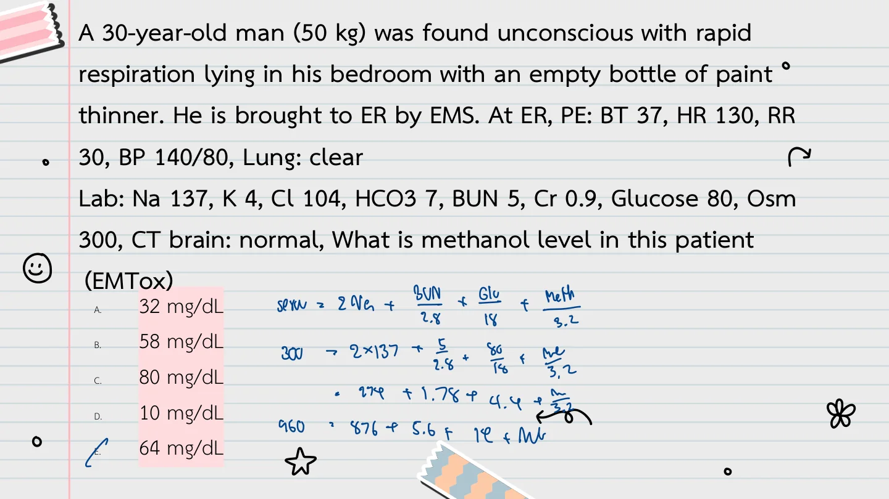
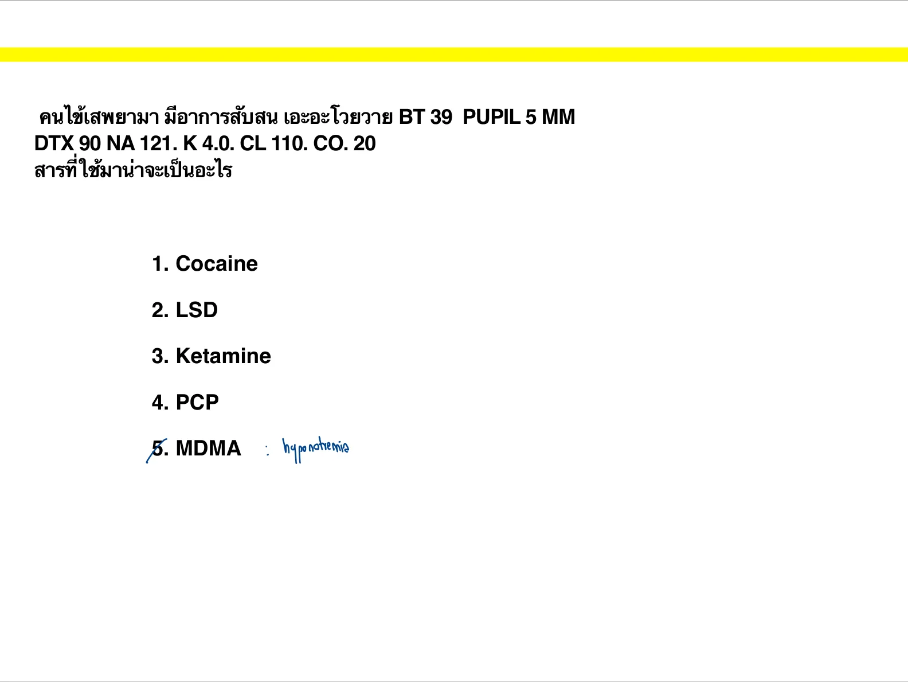
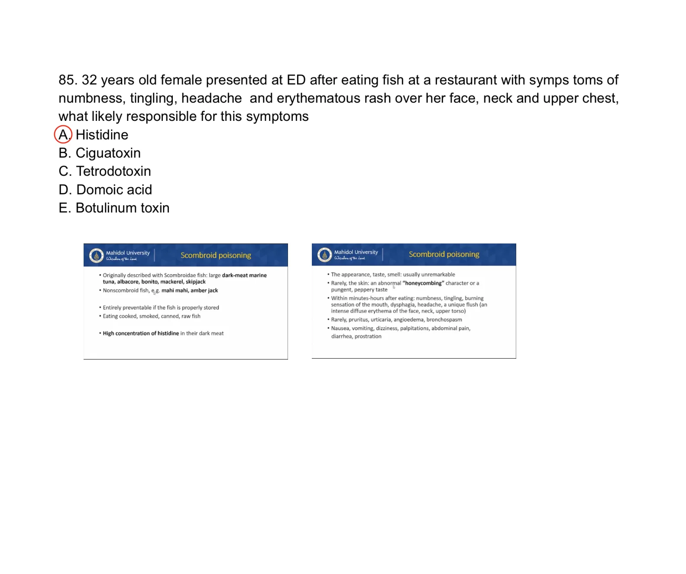
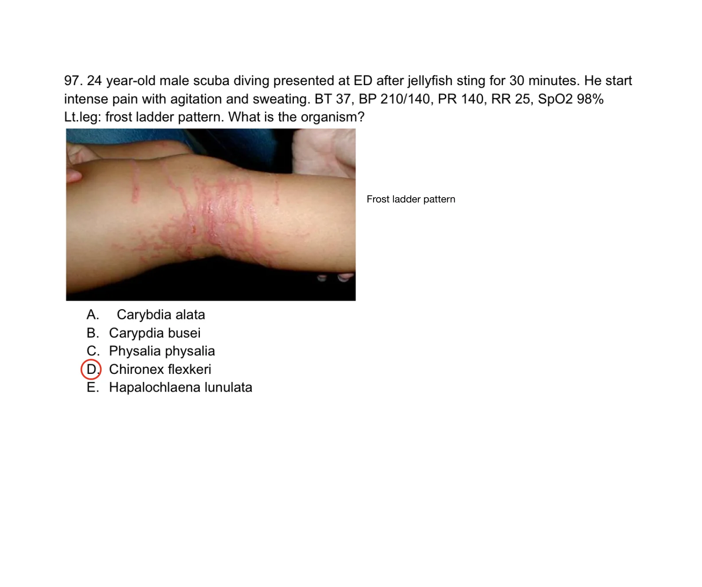
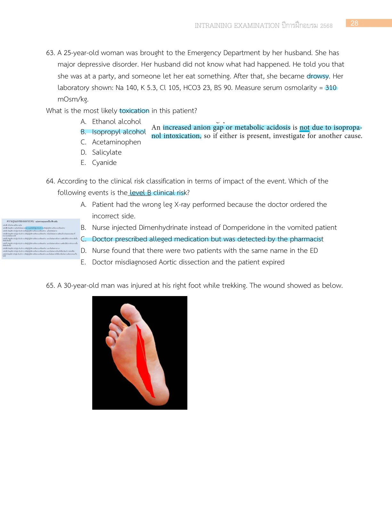
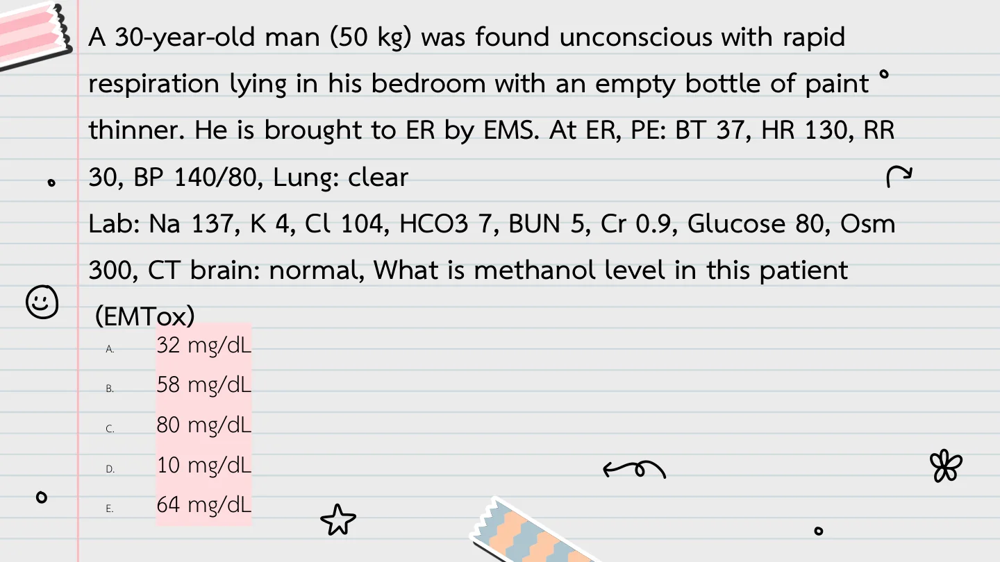
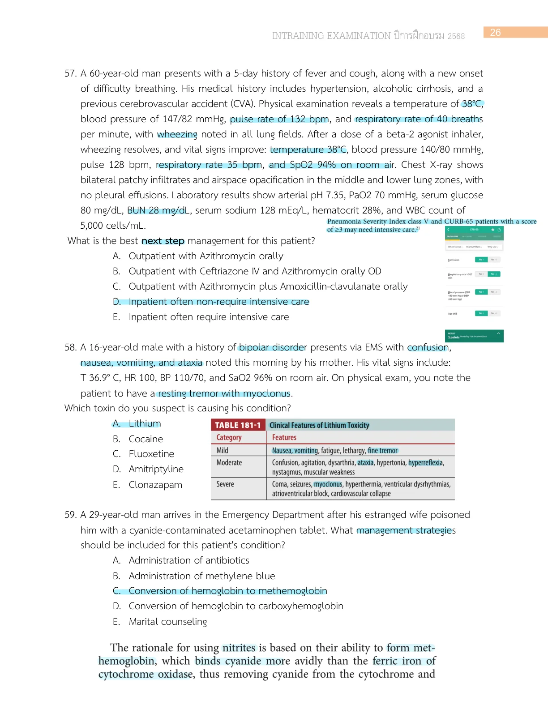

This A16 special chapter is a collection-first draft. The current goal is to gather old-exam stems and choices into one usable chapter before full answer verification and teaching-note expansion.
Q1. You are on a busy overnight shift and are handed the following ECG for a patient who was just brought in by ambulance. What is the most likely diagnosis?
Intraining 2569 Q8 source image
Source file: Intraining exam 100 ข้อ 12 Jan 2026 | Intraining source-preserving stem/options. No official answer key was found in the PDF; keep unanswered until verified. | Review flags: missing_verified_answer_key
Q2. A 25-year-old woman was brought to the Emergency Department by her husband. She has major depressive disorder. Her husband did not know what had happened. He told you that she was at a party, and someone let her eat something. After that, she became drowsy. Her laboratory shown: Na 140, K 5.3, Cl 105, HCO3 23, BS 90. Measure serum osmolarity = 310 mOsm/kg. What is the most likely toxication in this patient?
Intraining exam 100 ข้อ 12 Jan 2026, p.29
Source file: Intraining exam 100 ข้อ 12 Jan 2026 | Intraining source-preserving stem/options. No official answer key was found in the PDF; keep unanswered until verified. | Review flags: missing_verified_answer_key
Q3. A 45-year-old male is brought to the emergency department after being found unresponsive at home. The history provided by his wife indicates that he ingested a large amount of a floor cleaning solution about 30 minutes prior to ED. Upon arrival, the patient has a weak pulse, his blood pressure is 80/50 mmHg, and he has a stridor. The patient's skin appears flushed, and the lab findings show an elevated anion gap metabolic acidosis. Which of the following clinical signs is most critical to monitor closely in this patient?
Intraining exam 100 ข้อ 12 Jan 2026, p.36
Source file: Intraining exam 100 ข้อ 12 Jan 2026 | Intraining source-preserving stem/options. No official answer key was found in the PDF; keep unanswered until verified. | Review flags: missing_verified_answer_key
Q4. A 23-year-old man was brought to the Emergency Department (ED), in view of multiple episodes of vomiting, abdominal pain and feeling generally unwell. Symptoms began 14 hours after ingestion of self-prepared “leaf” tea (100mL). This was ingested to relieve the generalised pain caused by construction work, as part of a ritual. On assessment, the patient was alert but pale, lethargic and diaphoretic. Chest examination revealed normal vesicular breath sounds and normal percussion notes. The patient had a blood pressure of 101/60mmHg, with a heart rate of 37 bpm. Other parameters were within normal limits. ECG revealed as a picture. What is the mechanism of action of this tea ?
Intraining 2569 Q82 source image
Source file: Intraining exam 100 ข้อ 12 Jan 2026 | Intraining source-preserving stem/options. No official answer key was found in the PDF; keep unanswered until verified. | Review flags: missing_verified_answer_key
Q5. A 4-year-old healthy female presents to the emergency department with complaints of nausea, vomiting, ringing in the ears, and lethargy. She was reportedly playing in the living room while her parents were in the kitchen. About 3 hours ago, her mother found her with an opened empty bottle of oil of wintergreen or a liniment nearby. Her mother mentioned that she had not realized how much oil was missing until now. Vital Signs: BT 37°C, PR 120 bpm, RR 24 breaths/min, BP 100/70 mmHg, oxygen saturation 97% room air. The child appears lethargic but is arousable. Tinnitus was noted. Others were normal. Her initial point of care glucose was 80 mg. What is the initial treatment for this patient?
Intraining exam 100 ข้อ 12 Jan 2026, p.38
Source file: Intraining exam 100 ข้อ 12 Jan 2026 | Intraining source-preserving stem/options. No official answer key was found in the PDF; keep unanswered until verified. | Review flags: missing_verified_answer_key
Q6. A 25-year-old male undergoes general anesthesia for an elective surgery. Shortly after endotracheal intubation and administration of volatile anesthetics and succinylcholine, he develops generalized muscle rigidity, tachycardia, and rapidly rising body temperature. Capnography was shown below. What is the definitive treatment for this condition?
Intraining exam 100 ข้อ 12 Jan 2026, p.38
Source file: Intraining exam 100 ข้อ 12 Jan 2026 | Intraining source-preserving stem/options. No official answer key was found in the PDF; keep unanswered until verified. | Review flags: missing_verified_answer_key
Q8. Male 27 Y/O presented with extremely agitation and chest pain. He state that he snorting Cocaine all after afternoon. His V/S BT 38 C PR 112 BP 215/130 SpO2 96% PE WNL CXR normal EKG ainus tachycardia rate 116 bpm. What is most appropriate Mx?
Q9. Elderly female went to eat round tail horse shoe crab. After ingestion patient felt circumoral paresthesia same as other who consumed the same. What is the mechanism of this toxin?
Q14. Male 45 year ต ารวจน าส่งบอกว่ากินชามา (ให้รูปกล่องชามา) agitation , hallucination. BP150/80 BT38 dry axilla , Abd : hypoactive BS , full bladder CNS : agitated , pupil 5 mm dilated. Drug for control agitation ?
Q25. Female, BW 50 kg Try to commite suicide by ingesting Lithium carbonate 300 mg (1 tab = 8.12 mEq Li+), The bottle consist of 60 tabs but her father state that there are only 40 tabs left in the bottle, She present at ER 3 hrs after ingestion Calculate the peak plasma level, bioavailability 100% (There is no Vd given)
Q26. Female 34 yr brought by her parent after suicidal attempt ingestion some drugs. She had nausea and vomiting, AOC 2 hr after ingestion. V/S T 37c P100 BP 149/90 RR20 O2sat 95%. Heart lung normal. Abd mild tender epigastrium. After evaluation she loss of consciousness and found cardiac arrest. EKG sine wave then monomorphic VT (มีรูป) Lab ABG ph 7.4 PCO2 40 PO2 80 lactate 4, elyte K 7.5 What is toxin ?
Q37. yo alcoholic poor compliant bipolar 1 day his wife reported he was agitate and confuse PE HR 120 T37 BP 150/50 Orientate only to self, poor insight, tremulous Dx?
MCQ-202024.pdf.pdf, p.1
Source file: MCQ-202024.pdf.pdf
Reference: Source: MCQ-202024.pdf.pdf | p.1-20
Q38. 5-year-old boy is brought in with a history of grandpa's antihypertensive medication ingestion 2.5 hours before visiting ED. BP 72/50, PR 50/min, lethargic, BS 40 mg/dL. What is the likely diagnosis?
Test tox.pdf, p.4
Source file: Test tox.pdf | Targeted repair from Test tox.pdf page 4. No formal answer key line was present in the source.
Source file: Test tox.pdf | Targeted repair from Test tox.pdf page 3 with source EKG crop. No formal answer key line was present in the source.
Reference: Source: Test tox.pdf | p.3
Gas / Inhalational Toxicology
Q1. A 29-year-old man arrives in the Emergency Department after his estranged wife poisoned him with a cyanide-contaminated acetaminophen tablet. What management strategies should be included for this patient's condition?
Intraining exam 100 ข้อ 12 Jan 2026, p.27
Source file: Intraining exam 100 ข้อ 12 Jan 2026 | Intraining source-preserving stem/options. No official answer key was found in the PDF; keep unanswered until verified. | Review flags: missing_verified_answer_key
Q2. โรงงานแก๊สรั่ว แก๊สเป็นสีเหลืองอ่อน กลิ่น newly mown hay คนได้รับมีอาการแสบตา จมูก คอ ไอ และแสบตามตัวหลังสัมผัส. What is the type of this gas?
Cn H2S test.pdf, p.1
Source file: Cn H2S test.pdf | Targeted repair from OCR-corrupt Cn H2S test.pdf. No explicit answer key was present in the source.
Reference: Source: Cn H2S test.pdf | p.1-5
Q3. ผู้ป่วยมีภาวะ H2S poisoning. What is the proper antidote?
Cn H2S test.pdf, p.1
Source file: Cn H2S test.pdf | Targeted repair from OCR-corrupt Cn H2S test.pdf. No explicit answer key was present in the source.
Reference: Source: Cn H2S test.pdf | p.1-5
Q4. คนไข้ติดอยู่ในอาคารไฟไหม้ ถูกนำส่งโรงพยาบาล มีอาการสับสน ไม่ทำตามสั่ง. What is the proper management?
Cn H2S test.pdf, p.1
Source file: Cn H2S test.pdf | Targeted repair from OCR-corrupt Cn H2S test.pdf. No explicit answer key was present in the source.
Reference: Source: Cn H2S test.pdf | p.1-5
Q5. ผู้ป่วยหญิงติดอยู่ในอาคาร ถูกไฟไหม้ มีควัน และ HBCO level 20, lactate 12. What is the proper management?
Cn H2S test.pdf, p.1
Source file: Cn H2S test.pdf | Targeted repair from OCR-corrupt Cn H2S test.pdf. No explicit answer key was present in the source.
Reference: Source: Cn H2S test.pdf | p.1-5
Cardiotoxic / Antihypertensive Poisoning
Q1. A 40-year-old woman came to the ER, presenting with syncope after taking an unspecified number of pills three hours ago. Her husband reported that she had taken 30 tabs of digoxin prior to this. Her heart rate is 30 bpm, BP 80/60 mmHg, RR 20/min, SpO2 96%. After initial management with Atropine IV, the heart rate remained of 30 bpm. Which of the following is the most appropriate management in this patient?
Intraining exam 100 ข้อ 12 Jan 2026, p.28
Source file: Intraining exam 100 ข้อ 12 Jan 2026 | Intraining source-preserving stem/options. No official answer key was found in the PDF; keep unanswered until verified. | Review flags: missing_verified_answer_key
Q3. A 30-year-old man (50 kg) was found unconscious with rapid respiration lying in his bedroom with an empty bottle of paint thinner. He is brought to ER by EMS. At ER, PE: BT 37, HR 130, RR 30, BP 140/80, lung clear. Lab: Na 137, K 4, Cl 104, HCO3 7, BUN 5, Cr 0.9, glucose 80, Osm 300, CT brain normal. What is methanol level in this patient? (EMTox)
Quiz toxic alcohol.pdf, p.1
Source file: Quiz toxic alcohol.pdf | Targeted repair from Quiz toxic alcohol.pdf; source includes an explicit Answer E line.
Q4. A 30-year-old man (50 kg) was found unconscious with rapid respiration lying in his bedroom with an empty bottle of paint thinner. He is brought to ER by EMS. At ER, PE: BT 37, HR 130, RR 30, BP 140/80, lung clear. Lab: Na 137, K 4, Cl 104, HCO3 7, BUN 5, Cr 0.9, glucose 80, Osm 300, CT brain normal. What is the most specific treatment for this patient? (EMTox)
Quiz toxic alcohol.pdf, p.1
Source file: Quiz toxic alcohol.pdf | Targeted repair from Quiz toxic alcohol.pdf; source includes an explicit Answer C line.
Q8. Male 38 yrs, underlying chronic alcohol drinking and DM on metformin 2x2, presents with dyspnea after heavy alcohol drinking for 2 days. At ER: good consciousness, tachypnea, no other remarkable PE. Lab: BS 150, ABG pH 7.25, PCO2 25, PO2 130, HCO3 10, beta-OH 12, urine ketone negative. Diagnosis?
Test_for_AKA.pdf, p.1
Source file: Test_for_AKA.pdf | Targeted repair from Test_for_AKA.pdf. No explicit answer key was present in the source, so the answer remains needs_review unless a separate verified key is matched.
Source file: Test_for_AKA.pdf | Targeted repair from Test_for_AKA.pdf. No explicit answer key was present in the source, so the answer remains needs_review unless a separate verified key is matched.
Reference: Source: Test_for_AKA.pdf | p.1-2
Q10. A 9-year-old footballer was found alone in a cave. He ate lunch with his teammate and was not seen for 1 hour prior to being discovered. At ER, he can give his name but is somnolent. Lab: Na 140, K 4.4, Cl 106, HCO3 22, BUN 10, Cr 0.9, Osm 35 mOsm, urine ketone positive. What causes AOC? (EMTox)
Quiz toxic alcohol.pdf, p.1
Source file: Quiz toxic alcohol.pdf | Targeted repair from Quiz toxic alcohol.pdf; source includes an explicit Answer D line.
Q11. A 9-year-old footballer was found alone in a cave. He ate lunch with his teammate and was not seen for 1 hour prior to being discovered. At ER, he can give his name but is somnolent. Lab: Na 140, K 4.4, Cl 106, HCO3 22, BUN 10, Cr 0.9, Osm 35 mOsm, urine ketone positive. Best treatment for this patient? (EMTox)
Quiz toxic alcohol.pdf, p.1
Source file: Quiz toxic alcohol.pdf | Targeted repair from Quiz toxic alcohol.pdf; source includes an explicit Answer D line.
Source file: Substance test-1.pdf | Targeted repair from OCR-corrupt Substance test-1.pdf. No explicit answer key was present in the source.
Reference: Source: Substance test-1.pdf | p.1-8
Q5. A 44-year-old man with drug abuse presents with acute chest pain. His EKG is shown below. During evaluation, the patient develops intermittent run of VT. What is the best pharmacological therapy for this patient?
Substance test-1.pdf, p.1
Source file: Substance test-1.pdf | Targeted repair from Substance test-1.pdf. No explicit answer key was present in the source.
Q1. 24-year-old farmer presents with diarrhea and sudden onset of confusion, muscle twitching and nystagmus. Lab: severe metabolic acidosis. What is the most likely cause? (EMTox)
Quiz pesticides.pdf, p.1
Source file: Quiz pesticides.pdf | Targeted repair from Quiz pesticides.pdf; source includes an explicit Answer E line.
Reference: Source: Quiz pesticides.pdf | p.1-16
Q2. 24-year-old farmer presents with diarrhea and sudden onset of confusion, muscle twitching and nystagmus. Lab: severe metabolic acidosis. What is the most appropriate treatment? (EMTox)
Quiz pesticides.pdf, p.1
Source file: Quiz pesticides.pdf | Targeted repair from Quiz pesticides.pdf; source includes an explicit Answer A line.
Reference: Source: Quiz pesticides.pdf | p.1-16
McGraw Board Review Section
Q1. A 44-year-old man ingests lye in a suicide attempt and presents to the emergency department immedi ately thereafter. You evaluate him upon arrival and note that he is mildly tachypneic. The remainder of his vital signs are normal. His examination is remark able for audible stridor and difficulty with phonation. No oral burns are present, and the remainder of his examination is nondiagnostic. After you secure his airway, what is the NEXT BEST course of action?
Q2. A 62-year-old man is brought to the emergency department in status epilepticus. His family found him convulsing in his bed; no evidence of trauma was noted at the scene. They report that he has “struggled with depression for a long time,” and was recently diagnosed with pulmonary tuberculosis after a trip to India. The family found an empty bottle of isoniazid on his nightstand. Which of the following would represent definitive antidotal care for this patient? 13
Q3. You are evaluating a 16-year-old man who intention ally overdosed on his father’s “heart pills” approxi mately 6 hours prior to his emergency department arrival. He is unwilling to provide any additional his tory other than stating that he is “seeing haloes around things” and feels like his heart is “fluttering.” Vital signs are normal, and examination is unremarkable. His electrocardiogram shows frequent multifocal pre mature ventricular complexes, with a QRS duration of 92 ms and a QTc interval of 392 ms. The patient’s renal function is normal, and urine output is brisk. Serum potassium concentration is 6.6 mEq/L, and other electrolytes are normal. Acetaminophen and salicylate concentrations are undetectable. Which of the following statements is TRUE?
Q4. You call the regional poison center regarding a 50-year-old woman with a well-documented history of ethanol abuse who presents with confusion. Fam ily members who accompany her to the emergency department state that “she hasn’t really been eating much over the past few days.” She takes no medica tions and has no other known medical issues. Vital signs are remarkable for a HR 102, BP 149/82, and RR 24. She appears disheveled and is moderately con fused. Her examination shows no hyperreflexia and/ or clonus. Laboratory studies include a serum glucose concentration of 263 mg/dL and an anion gap of 22. Serum ketones are reported by the laboratory. The poison center recommends which of the following therapies?
Q5. A 26-year-old woman presents to the emergency department from her university, where she works as a graduate assistant in the chemistry laboratory. She complains of moderate skin and eye irritation after being exposed to “chemical reagents.” You take a detailed history and learn that she is researching novel wastewater treatments and uses chlorine in her exper iments. She was not wearing proper personal protec tive equipment when she spilled a small amount of dilute liquid chlorine on her shirt and hands. She states that she coughed “once or twice” at the time of the exposure, but has had no respiratory complaints since. The patient’s vital signs are unremarkable. She exudes a pungent odor on examination. Her conjunc tivae are injected but visual acuity is normal. No for eign bodies are seen on fluorescein staining. She is not coughing, and her pulmonary examination is remark able only for very minimal wheezing. The remainder of her examination is nondiagnostic. What is the BEST course of emergency department treatment?
Q6. A patient presents to the emergency department 45 minutes after “drinking pesticide.” He is imme diately brought to the resuscitation area, where he is noted to have a respiratory rate of 36. His other vital signs are normal. He smells of hydrocarbon, his pupils are miotic, and he is coughing on your evaluation. He speaks in full sentences and phonates normally. After 3 minutes of your examination, you note muscle fas ciculations, lacrimation, and rhinorrhea. The patient then proceeds to vomit nonbloody, nonbilious mate rial. Which of the following is the NEXT BEST imme diate action?
Q7. You are evaluating a 10-month-old boy who was brought to the emergency department by his parents after “turning blue and getting short of breath.” The mother states that the patient has been increasingly fussy recently, which she attributes to teething. She has been treating him with an over-the-counter teeth ing gel with an active ingredient of 10% benzocaine. Vital signs are remarkable for a respiratory rate of 32 and a pulse oximetry reading of 88% on room air. The child appears somewhat bluish-grayish and dyspneic, but the remainder of his examination is nondiagnos tic. His condition does not improve with supplemen tal oxygen administration. Which of the following is the MOST APPROPRIATE treatment at this time?
Q8. A 60-year-old woman presents to the emergency department for evaluation of slurred speech and inability to ambulate. Her family states that she is a “serious alcoholic” and has recently become unable to recall even basic recent events. However, her longterm memory appears to be preserved, per the family’s report. Examination is remarkable for ataxia, slurred speech, and paralysis of extraocular movements with lateral gaze. She is considerably confused but not delirious. Vital signs are normal and there is no hyperreflexia or clonus. This patient is suffering from which of the following?
Q9. A 37-year-old man with bipolar disorder and hyper tension presents to the emergency department from his group home with “neurologic problems.” The home also reports that he has had a “stomach bug” with vomiting and diarrhea over the past several days. Vital signs are normal, but the patient is significantly ataxic and tremulous. He is mildly confused and dif fusely hyperreflexic, but he is not delirious. There is no cogwheeling or lead-pipe rigidity. His mucous membrane examination is normal. His medication list includes alprazolam, gabapentin, lithium, and metoprolol. Which of the following statements is TRUE regarding the drug responsible for this patient’s symptom complex?
Q11. A 13-year-old boy is brought to the emergency department completely naked and hallucinating. He is alert but delirious, exhibits mumbling speech, and is picking at his monitor leads and intravenous lines. His core temperature is 39.1°C and his pulse rate is 126; the remainder of his vital signs are normal. His examination is notable for impressive mydriasis, a flushed appearance to his skin, and dry axillae. His electrocardiogram reveals a QRS complex of normal morphology and duration; however, his QTc is pro longed. What is the MOST APPROPRIATE NEXT course of action?
Q12. A 19-year-old man is brought in by friends from a “rave.” The patient’s acquaintances state that he suf fered a generalized tonic-clonic seizure at the party after “doing a lot of Ecstasy and dancing really hard.” The patient’s vital signs are remarkable only for a respiratory rate of 22, and he is clearly postictal. There are no signs of trauma, and the only remarkable phys ical examination findings are those of urinary incon tinence and a small abrasion overlying the anterior tongue. Which of the following laboratory studies is MOST LIKELY to be significantly abnormal?
Q13. A patient presents to the emergency department with severe finger pain after “accidentally touching a fish in his home salt-water fishtank” while cleaning the glass. He shows you a photograph of the offending organism on his smartphone (Figure 13.1). His vital signs are normal and his examination is notable for mild erythroderma at the site of his pain. You per form a bedside ultrasound and a radiograph, neither of which reveals evidence of a retained foreign body.
Q14. You are evaluating a 2-year-old boy who was brought to the emergency department by his parents after they witnessed ingestion of a single pellet of “rat poison.” They pulled the pellet from his mouth, but fear that “some of it may have dissolved on his tongue.” They brought the product to the emergency department, and the only active ingredient is 0.005% brodifacoum. The remainder of the product is constituted of inert/ nontoxic substances. Which of the following is the NEXT BEST course of action?
Q15. A 15-year-old woman with a history of major depression and anemia presents to the emergency department after ingesting several handfuls of her prescription medication. Her vital signs are nor mal, but she complains of nausea and vomiting. An abdominal radiograph is obtained, which displays many radio-opaque tablets within the stomach. After placing two large-bore intravenous catheters and starting a crystalloid infusion, what is the NEXT BEST step in management?
Q16. A 29-year-old man was brought to the emergency department by his significant other after he ingested several of her medications. He was initially noted to be hypertensive and bradycardic, with obtunda tion and miosis. He was given 0.4 mg of intravenous naloxone without change in his mental status. He underwent emergent head CT for fear of intracranial hemorrhage, which was normal. As he returned from radiology, he was noted to be hypotensive. Crystalloid resuscitation was undertaken, and his blood pressure slightly improved. Which of the following medica tions is the MOST LIKELY etiology of the patient’s presentation?
Q17. A 59-year-old woman was recently started on a new medication for her chronic migraines. She was involved in a verbal altercation with her spouse and subsequently overdosed on the entire bottle of her new medication. She quickly became somnolent and her spouse activated EMS. En route to the hospital, she was noted to be tachycardic and hypotensive. She also suffered a generalized tonic-clonic seizure in the ambulance. EMS was concerned about her electro cardiogram (Figure 13.2) and called the emergency department for recommendations. What is the BEST initial treatment for this overdose?
Q18. A 20-year-old man from a local university presents to the emergency department with altered mental status and agitation. Housemates who accompany him state he has a history of depression but no other medical problems. His only medication is citalopram, which he reportedly takes daily. While at a party tonight, he drank a large bottle of cough medication to “get high.” Soon thereafter, he became confused and agitated. In the emergency department, he is noted to be hyper thermic, tachycardic, and hypertensive. His exami nation is remarkable for impressive bilateral lower extremity hyperreflexia and clonus. Reflexes in the upper limbs are normal. He was given multiple doses of benzodiazepines and several liters of crystalloid without improvement. He was admitted to the inten sive care unit (ICU) overnight for continued therapy. What is the MOST LIKELY admitting diagnosis?
Q19. A 47-year-old former alcoholic presents from a reha bilitation facility with altered mental status, slurred speech, and ataxia. He exhibits no signs of trauma. Staff at the referring institution state that they do not keep any type of liquor at the facility. An ethanol concentration returned as undetectable; additionally, his serum pH and bicarbonate are normal. Serum osmolality, however, was elevated and ketones were noted in the urine. What is the NEXT BEST step in management?
Q20. A 12-kg 18-month-old boy was playing at his grand parents’ home where he “got into the medicine cabi net.” His grandparents bring him to the emergency department several hours later. In the examination room, the patient is noted to be tachycardic, tachy pneic, and somnolent. An intravenous line is placed, and a weight-based crystalloid bolus is given. His laboratory studies display a mixed metabolic acido sis with respiratory alkalosis. The grandparents show you a bottle of minty-smelling liquid, from which they suspect the patient drank. You have a high suspi cion for what ingestion?
Q21. A 3-year-old girl discovers a bottle of liquid in her parents’ bedroom. She takes a sip of the solution and begins to vomit. Her parents activate EMS, who note agitation followed by lethargy. She arrives in the emer gency department bradycardic and hypotensive, with evidence of bronchorrhea and respiratory distress. She suffers a generalized tonic-clonic seizure shortly after arrival. The patient’s parents identified the bot tle as containing liquid nicotine, from which they fill their electronic cigarettes. Administration of atropine will help reverse which of the patient’s symptoms?
Q22. A 16-year-old man was huffing gas from a bag in his family’s garage. He was startled by his father, who witnessed him collapse. The father noted no pulse immediately after the event and quickly called EMS. He then initiated cardiopulmonary resuscitation (CPR). The patient was taken to the local emergency department where his initial cardiac rhythm was polymorphic ventricular tachycardia. He was defi brillated once, and his rhythm degraded to ventricu lar fibrillation. Which is the MOST APPROPRIATE pharmacologic treatment for the patient’s condition?
Q23. A 20-year-old foreign exchange student is in central Africa when he is diagnosed with malaria. He is pre scribed quinine as monotherapy and discharged from clinic. He soon learns about a tragedy at home and overdoses on his newly prescribed medication. He quickly regrets his decision and returns to clinic. He is found to be nauseated, vomiting, and complains of tinnitus. He is noted to be hypotensive and an elec trocardiogram displays significant QRS widening and QTc prolongation with intermittent runs of poly morphic ventricular tachycardia. Which is the MOST useful therapy in this scenario?
Q24. A 33-year-old woman is flying alone from Bogota to Washington, DC. Flight attendants observe her to be anxious and diaphoretic. Vital signs obtained in flight display tachycardia and hypertension. She subse quently complains of chest pain, which results in an emergency landing so she can seek care. She is taken to the local emergency department, where she com plains of severe abdominal pain. Her vital signs are remarkable for HR 136 and BP 262/157. An abdomi nal radiograph displays no fewer than 40 radioopaque foreign bodies in the patient’s gastrointestinal tract. What is the MOST definitive therapy for this situation?
Q25. A 37-year-old woman without significant medical history presents to the emergency department for the second time in the past 2 weeks. Her chief com plaint at the initial visit was nausea and vomiting; history-taking at that time revealed that her symp toms began after having a meal with her ex-husband. She was treated with crystalloid infusion and reported symptomatic improvement at that time. She was dis charged with a diagnosis of foodborne illness with out further evaluation at that visit. Since that visit, her feet have become “extremely painful,” so much so that she can barely tolerate the bedsheets touching her feet at night. She also noted that her hair “started to fall out,” and she has experienced sharp chest pain with deep inspiration over the past 48 hours. At the time of her second emergency department visit, she is noted to be persistently tachycardic despite crys talloid administration. You have a suspicion that she may have been poisoned at the encounter with her former spouse. What is the BEST treatment for this patient’s condition?
Q26. A 54-year-old law enforcement officer is rushed to the emergency department where he is noted to be unconscious, tachycardic, and hypotensive. His police unit was dispatched to a parking lot where a person was noticed to be unconscious within a vehi cle with the engine off. His squad partner waited in the car while the patient investigated the scene; the partner witnessed the patient collapse as he opened the car’s door. The partner rushed to the patient’s aid, but immediately noted a strong smell of rotten eggs. The partner managed to move the patient away from the vehicle. EMS was activated, who placed on a nonrebreather and transported him to the local emer gency department. He was decontaminated outside; interestingly, all the coins in his pocket were noted to be oxidized a deep blue-black color. Which of the following is the BEST treatment for this patient’s exposure?
Q27. Extracorporeal elimination of a toxin is an impor tant tool that toxicologists may employ with certain overdoses. Hemodialysis is the most commonly used enhanced elimination technique. Which of the fol lowing describes a property of a toxin that can be removed by hemodialysis?
Q28. A 19-year-old man living in Texas read online about the mystical properties of toad venom. He locates one of these toads and “milks” the venom, which he then smokes. He begins to hallucinate but becomes extremely nauseated. He vomits and experiences severe abdominal pain. He presents to an emergency department, where he describes this misadventure. He is noted to be hyperkalemic, hypotensive, and bradycardic. In addition to psychedelic tryptamines, what other substances can be found in the venom of certain toads?
Q29. An 18-month-old boy is brought to the emergency department unresponsive after he was found with one of his mother’s “pain pills.” The patient is noted to be bradypneic, hypopneic, and bradycardic. His res pirations are quickly assisted, and intravenous access is obtained. You note pinpoint pupils and admin ister 0.1 mg/kg of naloxone. The patient’s heart and respiratory rates quickly improve. An electrocardio gram shows sinus bradycardia with a prolonged QTc. Forty-five minutes after naloxone administration, he is noted to be increasingly somnolent and therefore given a second dose of naloxone. What is the BEST course of action for this patient?
Q2. A 55-year-old patient being treated for tuberculosis for a few weeks presents with generalized tonic-clonic seizures and does not regain consciousness after the seizure. Which medication should be given?
MCQ-202024.pdf.pdf, p.16
Isoniazid/TB-medication seizure asks antidotal care (pyridoxine), which is antimicrobial toxicity rather than infectious disease.
Reference: Source: MCQ-202024.pdf.pdf | p.16 | recovered from table source.
Extra CO / CN / H2S / Methemoglobinemia
Q1. What is abnormal finding in CT brain in patient with CO poisoning?
QUIZ CO-CN.pdf, p.2
Source image preserved from QUIZ CO-CN.pdf p.2. No answer/lesson in this collection pass.
Reference: Source: QUIZ CO-CN.pdf | p.2 | full source page rendered; answer intentionally not imported.
Q2. What is substance can not cause methemoglobinemia ?
QUIZ CO-CN.pdf, p.4
Source image preserved from QUIZ CO-CN.pdf p.4. No answer/lesson in this collection pass.
Reference: Source: QUIZ CO-CN.pdf | p.4 | full source page rendered; answer intentionally not imported.
Q3. ผู้ป่วย methemoglobinemia ให้ methylene blue ไป แล้วอาการไม่ดีขึ7นนึกถึงภาวะต่อไปนี7 ยกเว้นข้อใด
QUIZ CO-CN.pdf, p.5
Source image preserved from QUIZ CO-CN.pdf p.5. No answer/lesson in this collection pass.
Reference: Source: QUIZ CO-CN.pdf | p.5 | full source page rendered; answer intentionally not imported.
Q4. ผู้ป่วยติดอยู่ในอาคารไฟไหม้ มีอาการสําลักควัน สงสัย CO with CN poisoning >> what is appropriate management?
QUIZ CO-CN.pdf, p.6
Source image preserved from QUIZ CO-CN.pdf p.6. No answer/lesson in this collection pass.
Reference: Source: QUIZ CO-CN.pdf | p.6 | full source page rendered; answer intentionally not imported.
Q5. CO poisoning ถาม O2sat ปลายนิ7วเทียบกับ ABG
QUIZ CO-CN.pdf, p.7
Source image preserved from QUIZ CO-CN.pdf p.7. No answer/lesson in this collection pass.
Reference: Source: QUIZ CO-CN.pdf | p.7 | full source page rendered; answer intentionally not imported.
Q6. H2S poisoning management
QUIZ CO-CN.pdf, p.8
Source image preserved from QUIZ CO-CN.pdf p.8. No answer/lesson in this collection pass.
Reference: Source: QUIZ CO-CN.pdf | p.8 | full source page rendered; answer intentionally not imported.
Source image preserved from Quiz toxic alcohol (1).pdf p.16. No answer/lesson in this collection pass.
Reference: Source: Quiz toxic alcohol (1).pdf | p.16 | full source page rendered; answer intentionally not imported.
Q9. A 37-year-old man is brought to ED by friend who reports that he had become agitated, anxious, and tremulous. At ER, he developed generalized tonic-clonic seizure. PE: BT 37.6, HR 140, RR 20, BP 140/100, Neurological examination revealed resting tremor. He has warm skin and diaphoresis. Diagnosis? (EMTox)
Quiz toxic alcohol (1).pdf, p.18
Original source image preserved from Quiz toxic alcohol (1).pdf p.18. Stem/options transcribed from the source image; answer/lesson intentionally not imported.
Reference: Source: Quiz toxic alcohol (1).pdf | p.18 | full source page rendered; answer intentionally not imported.
Q10. A 30-year-old man (50 kg) was found unconscious with rapid respiration lying in his bedroom with an empty bottle of paint thinner. He is brought to ER by EMS. At ER, PE: BT 37, HR 130, RR 30, BP 140/80, Lung: clear Lab: Na 137, K 4, Cl 104, HCO3 7, BUN 5, Cr 0.9, Glucose 80, Osm 300, CT brain: normal, What is methanol level in this patient (EMTox)

Quiz toxic alcohol (1).pdf, p.20
Original source image preserved from Quiz toxic alcohol (1).pdf p.20. Stem/options transcribed from the source image; answer/lesson intentionally not imported.
Reference: Source: Quiz toxic alcohol (1).pdf | p.20 | full source page rendered; answer intentionally not imported.
Q11. A 30-year-old man (50 kg) was found unconscious with rapid respiration lying in his bedroom with an empty bottle of paint thinner. He is brought to ER by EMS. At ER, PE: BT 37, HR 130, RR 30, BP 140/80, Lung: clear Lab: Na 137, K 4, Cl 104, HCO3 7, BUN 5, Cr 0.9, Glucose 80, Osm 300, CT brain: normal, What is the most specific Tx for this patient (EMTox)
Quiz toxic alcohol (1).pdf, p.22
Original source image preserved from Quiz toxic alcohol (1).pdf p.22. Stem/options transcribed from the source image; answer/lesson intentionally not imported.
Reference: Source: Quiz toxic alcohol (1).pdf | p.22 | full source page rendered; answer intentionally not imported.
Q12. A 9-year-old footballer was found alone in cave. He ate lunch with his teammate. He was not seen for 1 hour prior to being discovered in cave. At ER, He can give his name but somnolence. Lab: Na 140, K 4.4, Cl 106, HCO3 22, BUN 10, Cr 0.9, Osm 35 mOsm, urine ketone positive. What causes AOC? (EMTox)
Quiz toxic alcohol (1).pdf, p.24
Original source image preserved from Quiz toxic alcohol (1).pdf p.24. Stem/options transcribed from the source image; answer/lesson intentionally not imported.
Reference: Source: Quiz toxic alcohol (1).pdf | p.24 | full source page rendered; answer intentionally not imported.
Q13. A 9-year-old footballer was found alone in cave. He ate lunch with his teammate. He was not seen for 1 hour prior to being discovered in cave. At ER, He can give his name but somnolence. Lab: Na 140, K 4.4, Cl 106, HCO3 22, BUN 10, Cr 0.9, Osm 35 mOsm, urine ketone positive. Best Tx for this patient? (EMTox)
Quiz toxic alcohol (1).pdf, p.26
Original source image preserved from Quiz toxic alcohol (1).pdf p.26. Stem/options transcribed from the source image; answer/lesson intentionally not imported.
Reference: Source: Quiz toxic alcohol (1).pdf | p.26 | full source page rendered; answer intentionally not imported.
Original source image preserved from metal test.pdf p.4. Choices transcribed from the source image; answer/lesson intentionally not imported.
Reference: Source: metal test.pdf | p.4 | image-based source page; answer intentionally not imported.
Q5. 23. A mechanic was presented with abdominal pain. He has recurrent abdominal pain for 3 months PE: abd soft, generalized tender, no guarding. CBC: basophilic strippling 2+ What is the proper management?
metal test.pdf, p.5
Original source image preserved from metal test.pdf p.5. Choices transcribed from the source image; answer/lesson intentionally not imported.
Reference: Source: metal test.pdf | p.5 | image-based source page; answer intentionally not imported.
Q1. Female 63 y present with severe abdominal pain with diarrhea history heart fail + AF. She was shrimp allergy, current medication furosemide + digoxin. V/S: BT 37 PR 100 BP 140/90. Good conscious, abd - generalized tender with guarding , hypoactive bowel sound. Lab -cbc wbc 19000 (NE 78% LY 11%), Plt 200,000. Na 130, k 3 hco3 18. ABG pH 7.27. Film abdomen - adynamic bowel ileus, no free air. What is most appropriate management ?
MCQ 2566 combined.pdf, p.8
Potential A16/toxicology item originally routed to A01. Full source page preserved; no answer/lesson in this pass.
Reference: Source: MCQ 2566 combined.pdf | p.8 | originally routed as A01; answer intentionally not imported.
Source image preserved from Substance test-1.pdf p.6. No answer/lesson in this collection pass.
Reference: Source: Substance test-1.pdf | p.6 | full source page rendered; answer intentionally not imported.
Q6. ยา LOVE ใ^แ_วFอาการ`ลสน HALLUCINATION ถามกลไกการออกฤทc
Substance test-1.pdf, p.7
Source image preserved from Substance test-1.pdf p.7. No answer/lesson in this collection pass.
Reference: Source: Substance test-1.pdf | p.7 | full source page rendered; answer intentionally not imported.
Q7. คนไ[เสพยามา Fอาการ`บสน เอะอะโวยวาย BT 39 PUPIL 5 MM DTX 90 NA 121. K 4.0. CL 110. CO. 20 สาร'ใ^มาdาจะเAนอะไร

Substance test-1.pdf, p.8
Source image preserved from Substance test-1.pdf p.8. No answer/lesson in this collection pass.
Reference: Source: Substance test-1.pdf | p.8 | full source page rendered; answer intentionally not imported.
Extra Opioid Source Pages
Q1. breathing. v/s: BP 115/70, HR 99, BT36’c, RR 3 /min, O2 sat 87% on room air You notice fresh needle marks and miotic pupils. You begin bag-valve-mask ventilation and his oxygen saturation increases to 99%. Which of the following is the most appropriate next step in management? ⑬
opioid.pdf, p.1
Source image preserved from opioid.pdf p.1. No answer/lesson in this collection pass.
Reference: Source: opioid.pdf | p.1 | full source page rendered; answer intentionally not imported.
Q2. 11. Duration of action of naloxone in opioid overdose reversal a. 30 min b. 1 hr c. 2 hr 9.Opioidoverdoseห"ก80kgใ%naloxone0.4mgไ'(น,ใ%naloxone0.8(นถามmanagement a. Naloxone drip 0.5mg/hr b. Naloxone drip 0.8mg/hr c.Observe-าแ/bolusnaloxone0.8mg ⑳ close drip = 0.8x1 = 0.533 mybo ⑰
opioid.pdf, p.2
Source image preserved from opioid.pdf p.2. No answer/lesson in this collection pass.
Reference: Source: opioid.pdf | p.2 | full source page rendered; answer intentionally not imported.
Source image preserved from Quiz pesticides.pdf p.2. No answer/lesson in this collection pass. Options with missing text in the source are preserved as dots.
Reference: Source: Quiz pesticides.pdf | p.2 | full source page rendered; answer intentionally not imported.
Source image preserved from Quiz pesticides.pdf p.4. No answer/lesson in this collection pass. Options with missing text in the source are preserved as dots.
Reference: Source: Quiz pesticides.pdf | p.4 | full source page rendered; answer intentionally not imported.
Q3. What is the pesticide having toxicity like cyanide poisoning? (EMTox)
Quiz pesticides.pdf, p.6
Source image preserved from Quiz pesticides.pdf p.6. No answer/lesson in this collection pass. Options with missing text in the source are preserved as dots.
Reference: Source: Quiz pesticides.pdf | p.6 | full source page rendered; answer intentionally not imported.
Q4. 24-year-old farmer presents with diarrhea and sudden onset of confusion, muscle twitching and nystagmus. Lab: severe metabolic acidosis. What is the most likely cause? (EMTox)
Quiz pesticides.pdf, p.8
Source image preserved from Quiz pesticides.pdf p.8. No answer/lesson in this collection pass. Options with missing text in the source are preserved as dots.
Reference: Source: Quiz pesticides.pdf | p.8 | full source page rendered; answer intentionally not imported.
Q5. 24-year-old farmer presents with diarrhea and sudden onset of confusion, muscle twitching and nystagmus. Lab: severe metabolic acidosis. What is the most appropriate treatment? (EMTox)
Quiz pesticides.pdf, p.11
Source image preserved from Quiz pesticides.pdf p.11. No answer/lesson in this collection pass. Options with missing text in the source are preserved as dots.
Reference: Source: Quiz pesticides.pdf | p.11 | full source page rendered; answer intentionally not imported.
Q6. What is the difference of Thion and Oxon organophosphorus? (EMTox)
Quiz pesticides.pdf, p.13
Source image preserved from Quiz pesticides.pdf p.13. No answer/lesson in this collection pass.
Reference: Source: Quiz pesticides.pdf | p.13 | full source page rendered; answer intentionally not imported.
Q7. A 51-year-old man presents with abdominal pain and vomiting after ingestion of unknown herbicide. PE: Greenish stain in mouth, mild tenderness at epigastrium. Next tx? (EMTox)
Quiz pesticides.pdf, p.15
Original source image preserved from Quiz pesticides.pdf p.15. Stem/options transcribed from the source image; answer/lesson intentionally not imported.
Reference: Source: Quiz pesticides.pdf | p.15 | full source page rendered; answer intentionally not imported.
Extra Venom / Envenomation Source Pages
Q1. เด็กหนัก 20 กก. ถูกงูแมวเซากัด หลังจากให้Antivenom ไป 15 นาที มีอาการหายใจ ล าบาก PE : Skin : Wheal and flare , Lungs : Wheezing at both lungs หลังจากหยุดให้Antivenom และให้On O2 cannula แล้ว Most appropriate Mx?
Test for Snake bite ,.pdf, p.2
Source image preserved from Test for Snake bite ,.pdf p.2. No answer/lesson in this collection pass.
Reference: Source: Test for Snake bite ,.pdf | p.2 | full source page rendered; answer intentionally not imported.
Source image preserved from Test for Snake bite ,.pdf p.14. No answer/lesson in this collection pass.
Reference: Source: Test for Snake bite ,.pdf | p.14 | full source page rendered; answer intentionally not imported.
Extra Marine Toxin Source Pages
Q1. 85. 32 years old female presented at ED after eating fish at a restaurant with symps toms of numbness, tingling, headache and erythematous rash over her face, neck and upper chest, what likely responsible for this symptoms
Test marine.pdf, p.1
Original source image preserved from Test marine.pdf p.1. Choices transcribed from the source image; answer/lesson intentionally not imported.
Reference: Source: Test marine.pdf | p.1 | full source page rendered; answer intentionally not imported.
Q2. 85. 32 years old female presented at ED after eating fish at a restaurant with symps toms of numbness, tingling, headache and erythematous rash over her face, neck and upper chest, what likely responsible for this symptoms

Test marine.pdf, p.2
Original source image preserved from Test marine.pdf p.2. Choices transcribed from the source image; answer/lesson intentionally not imported.
Reference: Source: Test marine.pdf | p.2 | full source page rendered; answer intentionally not imported.
Q3. 97. 24 year-old male scuba diving presented at ED after jellyfish sting for 30 minutes. He start intense pain with agitation and sweating. BT 37, BP 210/140, PR 140, RR 25, SpO2 98% Lt.leg: frost ladder pattern. What is the organism?
Test marine.pdf, p.3
Original source image preserved from Test marine.pdf p.3. Choices transcribed from the source image; answer/lesson intentionally not imported.
Reference: Source: Test marine.pdf | p.3 | full source page rendered; answer intentionally not imported.
Q4. 97. 24 year-old male scuba diving presented at ED after jellyfish sting for 30 minutes. He start intense pain with agitation and sweating. BT 37, BP 210/140, PR 140, RR 25, SpO2 98% Lt.leg: frost ladder pattern. What is the organism?

Test marine.pdf, p.4
Original source image preserved from Test marine.pdf p.4. Choices transcribed from the source image; answer/lesson intentionally not imported.
Reference: Source: Test marine.pdf | p.4 | full source page rendered; answer intentionally not imported.
Q5. ดูโจทย์ต้นฉบับจากรูป source page: Test marine.pdf p.5
Test marine.pdf, p.5
Source image preserved from Test marine.pdf p.5. No answer/lesson in this collection pass.
Reference: Source: Test marine.pdf | p.5 | full source page rendered; answer intentionally not imported.
Q6. ดูโจทย์ต้นฉบับจากรูป source page: Test marine.pdf p.6
Test marine.pdf, p.6
Source image preserved from Test marine.pdf p.6. No answer/lesson in this collection pass.
Reference: Source: Test marine.pdf | p.6 | full source page rendered; answer intentionally not imported.
Source image preserved from Test for Thermal and Chemical Injuries.pdf p.13. No answer/lesson in this collection pass.
Reference: Source: Test for Thermal and Chemical Injuries.pdf | p.13 | full source page rendered; answer intentionally not imported.
Extra Local Anesthetic Source Pages
Q1. เ"กหUก 20 กก -แผลWแขน จะเXบแผล จะใY 2%LIDOCAIN WITH ADRENALINE มากZด[ ML
Test tox.pdf, p.5
Source image preserved from Test tox.pdf p.5. No answer/lesson in this collection pass.
Reference: Source: Test tox.pdf | p.5 | full source page rendered; answer intentionally not imported.
Extra McGraw Routed Toxicology Candidates
Q1. A 41-year-old man with no past medical history presents to the emergency department with signifi cant chest pain and diaphoresis. The patient takes no medications and has no allergies. He is tachycardic, diaphoretic, and hypertensive. The patient’s ECG dem onstrates no significant ST or T-wave abnormalities and is notable only for his heart rate. The patient admits to using cocaine prior to presenting to the emergency department. Which is the NEXT APPROPRIATE step in management?
McGraw Chapter 5: Cardiovascular Disorders, p.46
Potential toxicology-adjacent McGraw item originally routed to A02. Full source page preserved; no answer/lesson in this pass.
Reference: Source: McGraw Chapter 5: Cardiovascular Disorders | p.46 | originally routed as A02; answer intentionally not imported.
Q2. A 53-year-old man presents to the emergency depart ment with chest pain. His blood pressure is 250/170. Due to his severe hypertension and concerning description of the pain, he is immediately started on an antihypertensive medication. Five hours later the admitting team mentions that they are concerned about cyanide toxicity if the patient stays on the med ication too long. Which medication was started?
McGraw Chapter 5: Cardiovascular Disorders, p.46
Potential toxicology-adjacent McGraw item originally routed to A02. Full source page preserved; no answer/lesson in this pass.
Reference: Source: McGraw Chapter 5: Cardiovascular Disorders | p.46 | originally routed as A02; answer intentionally not imported.
Q3. A patient presents to the emergency department with a blood pressure of 235/140. He states that his blood pressure has never been this high before. Upon further questioning, he admits to running out of his antihypertensive medication 2 days ago. Which med ication was he MOST LIKELY taking?
McGraw Chapter 5: Cardiovascular Disorders, p.46
Potential toxicology-adjacent McGraw item originally routed to A02. Full source page preserved; no answer/lesson in this pass.
Reference: Source: McGraw Chapter 5: Cardiovascular Disorders | p.46 | originally routed as A02; answer intentionally not imported.
Q4. A 5-year-old otherwise healthy girl is brought to the emergency department by her parents for nausea and vomiting developed after eating a mushroom while camping about 4 hours prior to presentation. If delayed toxicity develops, the patient is at risk for which feared complication?
McGraw Chapter 14: Environmental Injuries, p.192
Potential toxicology-adjacent McGraw item originally routed to A05. Full source page preserved; no answer/lesson in this pass.
Reference: Source: McGraw Chapter 14: Environmental Injuries | p.192 | originally routed as A05; answer intentionally not imported.
Q5. The toxic agent in poison hemlock is structurally MOST similar to which substance?
McGraw Chapter 14: Environmental Injuries, p.192
Potential toxicology-adjacent McGraw item originally routed to A05. Full source page preserved; no answer/lesson in this pass.
Reference: Source: McGraw Chapter 14: Environmental Injuries | p.192 | originally routed as A05; answer intentionally not imported.
Q6. Which toxidrome would be expected in an ingestion of deadly nightshade?
McGraw Chapter 14: Environmental Injuries, p.192
Potential toxicology-adjacent McGraw item originally routed to A05. Full source page preserved; no answer/lesson in this pass.
Reference: Source: McGraw Chapter 14: Environmental Injuries | p.192 | originally routed as A05; answer intentionally not imported.
Q7. Which of the following is an indication for hyperbaric oxygen therapy in acute carbon monoxide poisoning?
McGraw Chapter 14: Environmental Injuries, p.192
Potential toxicology-adjacent McGraw item originally routed to A05. Full source page preserved; no answer/lesson in this pass.
Reference: Source: McGraw Chapter 14: Environmental Injuries | p.192 | originally routed as A05; answer intentionally not imported.
Q8. Which of the following is a symptom of opioid withdrawal?
McGraw Chapter 22: Psychosocial Disorders, p.288
Potential toxicology-adjacent McGraw item originally routed to A13. Full source page preserved; no answer/lesson in this pass.
Reference: Source: McGraw Chapter 22: Psychosocial Disorders | p.288 | originally routed as A13; answer intentionally not imported.
Q9. A patient in acute opioid and/or alcohol withdrawal is experiencing acute agitation. What is the BEST medi cation to use for this patient?
McGraw Chapter 22: Psychosocial Disorders, p.288
Potential toxicology-adjacent McGraw item originally routed to A13. Full source page preserved; no answer/lesson in this pass.
Reference: Source: McGraw Chapter 22: Psychosocial Disorders | p.288 | originally routed as A13; answer intentionally not imported.
Q10. For which of the following conditions is digoxin contraindicated?
McGraw Chapter 2: Resuscitation, p.20
Potential toxicology-adjacent McGraw item originally routed to B. Full source page preserved; no answer/lesson in this pass.
Reference: Source: McGraw Chapter 2: Resuscitation | p.20 | originally routed as B; answer intentionally not imported.
Extra CN / H2S Source Pages
Q1. โรงงาน&แ(ส*ว แ(สเปน.เห0อง2อน ก4น NEWLY MOWN HAY คน67ม9ส&อาการแสบ;อน6ตา จ>ก คอ ไอ แสบ;อนตาม@วหAง WHAT’S THE TYPE OF THIS GAS
Cn H2S test.pdf, p.2
Source image preserved from Cn H2S test.pdf p.2. No answer/lesson in this collection pass.
Reference: Source: Cn H2S test.pdf | p.2 | full source page rendered; answer intentionally not imported.
Source image preserved from MCI - Hazmat test.pdf p.11. No answer/lesson in this collection pass.
Reference: Source: MCI - Hazmat test.pdf | p.11 | full source page rendered; answer intentionally not imported.
Extra Opioid Prescribing / Drug-Related Behavior Source Pages
Q1. A 30-year-old man presents with acute dental pain. He reports that his oxycodone prescription from another hospital was stolen and requests a refill. Examination is unremarkable. Which of the following describes a recommended practice for appropriate opioid prescribing in the emergency department when you suspect aberrant drug-related behavior?
McGraw Chapter 3, p.30
Potential toxicology-adjacent opioid prescribing item. Full source page preserved; no answer/lesson in this pass.
Q1. An otherwise healthy 7-year-old girl is brought to the emergency department by her parents for evalua tion after being stung by a scorpion. Parents state that about 2 hours ago the patient began to scream and cry in pain after being stung on her foot by a scorpion found while putting on her shoes. On examination, she is tachycardic, diaphoretic, tremulous, and in acute discomfort. The plantar aspect of her right foot is ery thematous and extremely tender. While in the emer gency department she begins to display uncontrollable jerking motion of the extremities. Which is the MOST APPROPRIATE NEXT step in management?
McGraw Chapter 14: Environmental Injuries, p.192
Potential toxicology-adjacent envenomation/marine item originally routed to A05. Full source page preserved; no answer/lesson in this pass.
Q4. A 31-year-old man comes to the emergency department complaining of severe pain in his leg. He states that while snorkeling off a coral reef he felt sudden onset stinging pain in his left calf. Shortly after arrival he begins to complain of chest tightness. In addition to supportive measures, which of the following is the BEST INITIAL management of his skin lesion (Figure 14.2)?
McGraw Chapter 14: Environmental Injuries, p.192
Potential toxicology-adjacent envenomation/marine item originally routed to A05. Full source page preserved; no answer/lesson in this pass.
Extra Intraining AKA / Alcohol-Related Source Pages
Q1. A 45-year-old man with a history of chronic alcohol use presents with nausea, vomiting, and abdominal pain. He appears tachycardic, tachypneic, and mildly confused. Laboratory results show pH: 7.28, HCO3: 12 mEq/L, Anion gap: 22, Glucose: 92 mg/dL, Serum ketones: Positive Which of the following is the first-line treatment for this condition?
Intraining exam 100 ข้อ 12 Jan 2026, p.10
Potential A16/toxicology item originally routed to A01. Full source page preserved; no answer/lesson in this pass.
Reference: Source: Intraining exam 100 ข้อ 12 Jan 2026 | p.10 | originally routed as A01; answer intentionally not imported.
Q2. A 16-year-old male with a history of bipolar disorder presents via EMS with confusion, nausea, vomiting, and ataxia noted this morning by his mother. His vital signs include: T 36.9° C, HR 100, BP 110/70, and SaO2 96% on room air. On physical exam, you note the patient to have a resting tremor with myoclonus. Which toxin do you suspect is causing his condition?
Intraining exam 100 ข้อ 12 Jan 2026, p.27
Potential A16/toxicology item originally routed to A05. Full source page preserved; no answer/lesson in this pass.
Reference: Source: Intraining exam 100 ข้อ 12 Jan 2026 | p.27 | originally routed as A05; answer intentionally not imported.
Extra McGraw CO / Chemical Environmental Candidates
Q1. A 44-year-old male construction worker arrives to your emergency department with a burn injury to his leg. He was preparing cement when he accidentally spilled it on his leg (Figure 14.3). Which of the follow ing is the BEST INITIAL management of this type of injury?
McGraw Chapter 14: Environmental Injuries, p.192
Additional toxicology-adjacent candidate originally routed to A05. Full source page preserved; no answer/lesson in this pass.
Q2. A 47-year-old man comes to your emergency depart ment from home with his wife and son for evaluation of headache. He began to experience a mild, throb bing headache this morning that gradually wors ened despite taking Tylenol. His symptoms worsened throughout the evening and he developed nausea. His wife and 11-year-old son began to experience similar headaches as well, prompting emergency department presentation. On arrival to the emergency depart ment, the patient’s headache has partially improved. Vital signs and neurologic examination are normal. Which of the following is the appropriate disposition for this patient?
McGraw Chapter 14: Environmental Injuries, p.192
Additional toxicology-adjacent candidate originally routed to A05. Full source page preserved; no answer/lesson in this pass.
Source image preserved from รวมข้อสอบ-board-2562-CHULA.pdf p.24. No answer/lesson in this collection pass.
Reference: Source: รวมข้อสอบ-board-2562-CHULA.pdf | p.24 | full source page rendered; answer intentionally not imported.
Extra Intraining 2569 Envenomation Source Pages
Q1. 17. A 30 year-old-man was bitten by his snake at his right index 1 hour ago. He has only two small puncture wounds with no active bleeding at his index. He does not have any muscle weakness or other symptoms. His snake picture is shown. What is the most appropriate management?
Intraining exam 100 ข้อ 12 Jan 2026.pdf, p.11
Source image preserved from Intraining exam 100 ข้อ 12 Jan 2026.pdf p.11. No answer/lesson in this collection pass.
Reference: Source: Intraining exam 100 ข้อ 12 Jan 2026.pdf | p.11 | full source page rendered; answer intentionally not imported.
Extra Intraining 2569 Toxicology Source Pages
Q1. 63. A 25-year-old woman was brought to the Emergency Department by her husband. She has major depressive disorder. Her husband did not know what had happened. He told you that she was at a party, and someone let her eat something. After that, she became drowsy. Her laboratory shown: Na 140, K 5.3, Cl 105, HCO3 23, BS 90. Measure serum osmolarity = 310 mOsm/kg. What is the most likely toxication in this patient?

Intraining exam 100 ข้อ 12 Jan 2026.pdf, p.29
Source image preserved from Intraining exam 100 ข้อ 12 Jan 2026.pdf p.29. No answer/lesson in this collection pass.
Reference: Source: Intraining exam 100 ข้อ 12 Jan 2026.pdf | p.29 | full source page rendered; answer intentionally not imported.
Source image preserved from รวมข้อสอบ-board-2562-CHULA.pdf p.34. No answer/lesson in this collection pass.
Reference: Source: รวมข้อสอบ-board-2562-CHULA.pdf | p.34 | full source page rendered; answer intentionally not imported.
Extra MCQ 2024 Final Toxicology Source Pages
Q1. 109. 55 yr TB กินยา TB few week มาด้วย generalized tonic clonic seizures หลังชักยังไม่ตื่น ให้ยาอะไร
MCQ-202024.pdf.pdf, p.16
Source image preserved from MCQ-202024.pdf.pdf p.16. No answer/lesson in this collection pass.
Reference: Source: MCQ-202024.pdf.pdf | p.16 | full source page rendered; answer intentionally not imported.
Q2. 111. Female 40 yr with nausea vomiting and diarrhea 30 minute, she had history of eating mushroom 2 hr ago, physical exam reveal vital sign stable, good conscious, diaphoresis, hyperlacrimation, hypersalivation, what is organism?
MCQ-202024.pdf.pdf, p.16
Source image preserved from MCQ-202024.pdf.pdf p.16. No answer/lesson in this collection pass.
Reference: Source: MCQ-202024.pdf.pdf | p.16 | full source page rendered; answer intentionally not imported.
Q3. 112. The police sent male 35 yr, who ingested a portion of cocaine pocket, he is agitate, T 37 PR 160/min, BP 160/100, abdomen soft non tenderness, neuro E4V5M6, EKG as below, what appropriate management
MCQ-202024.pdf.pdf, p.16
Source image preserved from MCQ-202024.pdf.pdf p.16. No answer/lesson in this collection pass.
Reference: Source: MCQ-202024.pdf.pdf | p.16 | full source page rendered; answer intentionally not imported.
Q4. 114. Female smell irritant gas, feel better after rest, ต่อมามีอาการแน่นหน้าอก มารพ. v/s normal
MCQ-202024.pdf.pdf, p.16
Source image preserved from MCQ-202024.pdf.pdf p.16. No answer/lesson in this collection pass.
Reference: Source: MCQ-202024.pdf.pdf | p.16 | full source page rendered; answer intentionally not imported.
Q5. 115. ญ 20 yr กิน amitriptyline 25 mg ปริมาณมาก หลังจากกินมา 2 ชม จากนั้น GCS 4 seizure ได้ diazepam 10 mg IV BP 90/50 EKG ตอนแรก sinus tach then EKG TDP ถาม
MCQ-202024.pdf.pdf, p.16
Source image preserved from MCQ-202024.pdf.pdf p.16. No answer/lesson in this collection pass.
Reference: Source: MCQ-202024.pdf.pdf | p.16 | full source page rendered; answer intentionally not imported.
Q6. 116. ช 30 EMS ออกรับ unconscious 1 ชม เจอของเหลวในขวด กลิ่น alcohol v/s BT 37 PR 120 BP 80/50 SpO2 95 E1V2M4 PE normal all LAB: CBC wnl BS 100 BUN 50 Cr 0.5 Na 134 K 3.4 Cl 101 HCO2 21 Ca 2.0 ketone 10 serum Osm 320
MCQ-202024.pdf.pdf, p.16
Source image preserved from MCQ-202024.pdf.pdf p.16. No answer/lesson in this collection pass.
Reference: Source: MCQ-202024.pdf.pdf | p.16 | full source page rendered; answer intentionally not imported.
Q7. 117. ผู้ชายญาติพามาที่ ER ด้วยกินยาเบื่อหนูไม่ทราบชนิด มีอาการเวียนศีรษะ คลื่นไส้ มาที่ ER อาการปกติ V/S stable, PE normal, good consciousness ระหว่าง observe ที่ ER ผู้ป่วยมี generalized tonic clonic seizure 3-4 times, not gain conscious ถามว่าเป็นสารอะไร
MCQ-202024.pdf.pdf, p.16
Source image preserved from MCQ-202024.pdf.pdf p.16. No answer/lesson in this collection pass.
Reference: Source: MCQ-202024.pdf.pdf | p.16 | full source page rendered; answer intentionally not imported.
Source image preserved from รวมข้อสอบ-board-2562-CHULA.pdf p.4. No answer/lesson in this collection pass.
Reference: Source: รวมข้อสอบ-board-2562-CHULA.pdf | p.4 | full source page rendered; answer intentionally not imported.
Q7. 11. ให้อาการ neuroleptic malignant syndrome ถาม 1st line management
รวมข้อสอบ-board-2562-CHULA.pdf, p.4
Source image preserved from รวมข้อสอบ-board-2562-CHULA.pdf p.4. No answer/lesson in this collection pass.
Reference: Source: รวมข้อสอบ-board-2562-CHULA.pdf | p.4 | full source page rendered; answer intentionally not imported.
Extra MCQ 2025 Toxicology Source Pages
Q1. 11. Female 34 yr brought by her parent after suicidal attempt ingestion some drugs. She had nausea and vomiting, AOC 2 hr after ingestion. V/S T 37c P100 BP 149/90 RR20 O2sat 95%. Heart lung normal. Abd mild tender epigastrium. After evaluation she loss of consciousness and found cardiac arrest. EKG sine wave then monomorphic VT (มีรูป) Lab ABG pH 7.4 PCO2 40 PO2 80 lactate 4, electrolyte K 7.5 What is toxin?
MCQ 2025 รวมไม่แยกหัวข้อ.pdf, p.9
Source image preserved from MCQ 2025 รวมไม่แยกหัวข้อ.pdf p.9. No answer/lesson in this collection pass.
Reference: Source: MCQ 2025 รวมไม่แยกหัวข้อ.pdf | p.9 | full source page rendered; answer intentionally not imported.
Source image preserved from MCQ 2025 รวมไม่แยกหัวข้อ.pdf p.15. No answer/lesson in this collection pass.
Reference: Source: MCQ 2025 รวมไม่แยกหัวข้อ.pdf | p.15 | full source page rendered; answer intentionally not imported.
Q11. 36. Male chronic alcohol มาด้วยเหนื่อยเพลีย Lab metabolic acidosis, BS ประมาณ 150 Na 135 ketone positive ถามว่าจะเลือกสารน้ำตัวแรกในการ treat เป็นอะไร
MCQ 2025 รวมไม่แยกหัวข้อ.pdf, p.28
Source image preserved from MCQ 2025 รวมไม่แยกหัวข้อ.pdf p.28. No answer/lesson in this collection pass.
Reference: Source: MCQ 2025 รวมไม่แยกหัวข้อ.pdf | p.28 | full source page rendered; answer intentionally not imported.
Q12. 48. Female 68 yr old U/D AF on warfarin. Present with 3 day melena. V/S PR 140 bpm, BP 80/50. Hct baseline 32% เหลือ 18% ถาม initial management
MCQ 2025 รวมไม่แยกหัวข้อ.pdf, p.36
Source image preserved from MCQ 2025 รวมไม่แยกหัวข้อ.pdf p.36. No answer/lesson in this collection pass.
Reference: Source: MCQ 2025 รวมไม่แยกหัวข้อ.pdf | p.36 | full source page rendered; answer intentionally not imported.
Extra Opioid Quiz Source Pages
Q1. A 25 yo man is carried into the ED by two of his friends who state that he is not breathing. V/S: BP 115/70, HR 99, BT 36 C, RR 3/min, O2 sat 87% on room air. You notice fresh needle marks and miotic pupils. You begin bag-valve-mask ventilation and his oxygen saturation increases to 99%. Which of the following is the most appropriate next step in management?
opioid.pdf, p.1
Source image preserved from opioid.pdf p.1. No answer/lesson in this collection pass.
Reference: Source: opioid.pdf | p.1 | full source page rendered; answer intentionally not imported.
Q2. 11. Duration of action of naloxone in opioid overdose reversal
opioid.pdf, p.2
Source image preserved from opioid.pdf p.2. No answer/lesson in this collection pass.
Reference: Source: opioid.pdf | p.2 | full source page rendered; answer intentionally not imported.
Source image preserved from Quiz toxic alcohol.pdf p.16. No answer/lesson in this collection pass.
Reference: Source: Quiz toxic alcohol.pdf | p.16 | full source page rendered; answer intentionally not imported.
Q7. A 37-year-old man is brought to ED by friend who reports that he had become agitated, anxious, and tremulous. At ER, he developed generalized tonic-clonic seizure. PE: BT 37.6, HR 140, RR 20, BP 140/100. Neurological examination revealed resting tremor. He has warm skin and diaphoresis. Diagnosis? (EMTox)
Quiz toxic alcohol.pdf, p.18
Source image preserved from Quiz toxic alcohol.pdf p.18. No answer/lesson in this collection pass.
Reference: Source: Quiz toxic alcohol.pdf | p.18 | full source page rendered; answer intentionally not imported.
Q8. A 30-year-old man (50 kg) was found unconscious with rapid respiration lying in his bedroom with an empty bottle of paint thinner. He is brought to ER by EMS. At ER, PE: BT 37, HR 130, RR 30, BP 140/80, Lung clear. Lab: Na 137, K 4, Cl 104, HCO3 7, BUN 5, Cr 0.9, Glucose 80, Osm 300, CT brain normal. What is methanol level in this patient? (EMTox)

Quiz toxic alcohol.pdf, p.20
Source image preserved from Quiz toxic alcohol.pdf p.20. No answer/lesson in this collection pass.
Reference: Source: Quiz toxic alcohol.pdf | p.20 | full source page rendered; answer intentionally not imported.
Q9. A 30-year-old man (50 kg) was found unconscious with rapid respiration lying in his bedroom with an empty bottle of paint thinner. He is brought to ER by EMS. At ER, PE: BT 37, HR 130, RR 30, BP 140/80, Lung clear. Lab: Na 137, K 4, Cl 104, HCO3 7, BUN 5, Cr 0.9, Glucose 80, Osm 300, CT brain normal. What is the most specific treatment for this patient? (EMTox)
Quiz toxic alcohol.pdf, p.22
Source image preserved from Quiz toxic alcohol.pdf p.22. No answer/lesson in this collection pass.
Reference: Source: Quiz toxic alcohol.pdf | p.22 | full source page rendered; answer intentionally not imported.
Q10. A 9-year-old footballer was found alone in cave. He ate lunch with his teammate. He was not seen for 1 hour prior to being discovered in cave. At ER, he can give his name but somnolence. Lab: Na 140, K 4.4, Cl 106, HCO3 22, BUN 10, Cr 0.9, Osm gap 35 mOsm, urine ketone positive. What causes AOC? (EMTox)
Quiz toxic alcohol.pdf, p.24
Source image preserved from Quiz toxic alcohol.pdf p.24. No answer/lesson in this collection pass.
Reference: Source: Quiz toxic alcohol.pdf | p.24 | full source page rendered; answer intentionally not imported.
Q11. A 9-year-old footballer was found alone in cave. He ate lunch with his teammate. He was not seen for 1 hour prior to being discovered in cave. At ER, he can give his name but somnolence. Lab: Na 140, K 4.4, Cl 106, HCO3 22, BUN 10, Cr 0.9, Osm gap 35 mOsm, urine ketone positive. Best treatment for this patient? (EMTox)
Quiz toxic alcohol.pdf, p.26
Source image preserved from Quiz toxic alcohol.pdf p.26. No answer/lesson in this collection pass.
Reference: Source: Quiz toxic alcohol.pdf | p.26 | full source page rendered; answer intentionally not imported.
Source image preserved from Test tox.pdf p.3. No answer/lesson in this collection pass.
Reference: Source: Test tox.pdf | p.3 | full source page rendered; answer intentionally not imported.
Q3. 5 year old boy is brought in with a history of grandpa's antihypertensive medication ingestion 2.5 hr before visiting ED. BP 72/50, PR 50/min, lethargic, BS 40 mg/dL. What is the likely diagnosis?
Test tox.pdf, p.4
Source image preserved from Test tox.pdf p.4. No answer/lesson in this collection pass.
Reference: Source: Test tox.pdf | p.4 | full source page rendered; answer intentionally not imported.
Extra Serotonin / TCA Test Source Pages
Q1. UD depression on sertraline present with confusion and agitation. General appearance agitation. PE BT 39, HR 130, clonus positive, hyperreflexia and tremor. What is most likely diagnosis?
TEST.pdf, p.2
Source image preserved from TEST.pdf p.2. No answer/lesson in this collection pass.
Reference: Source: TEST.pdf | p.2 | full source page rendered; answer intentionally not imported.
Source image preserved from TEST.pdf p.3. No answer/lesson in this collection pass.
Reference: Source: TEST.pdf | p.3 | full source page rendered; answer intentionally not imported.
Q3. ผู้ป่วย MDD on amitriptyline present with palpitation BT 39 PR 120 RR 24 BP 125/78 sat 98% RA. EKG shown. What is the most proper management?
TEST.pdf, p.4-5-6
Source image preserved from TEST.pdf p.4-5-6. No answer/lesson in this collection pass.
Reference: Source: TEST.pdf | p.4-5-6 | full source page rendered; answer intentionally not imported.
Extra Substance Test Source Pages
Q1. A 44 yrs old man with drug abused present with acute chest pain. His EKG is shown below. During evaluation, the patient develops intermittent run of VT. What is the best pharmacological therapy of this patient?
Substance test-1.pdf, p.2
Source image preserved from Substance test-1.pdf p.2. No answer/lesson in this collection pass.
Reference: Source: Substance test-1.pdf | p.2 | full source page rendered; answer intentionally not imported.
Source image preserved from Test for Thermal and Chemical Injuries.pdf p.8. No answer/lesson in this collection pass.
Reference: Source: Test for Thermal and Chemical Injuries.pdf | p.8 | full source page rendered; answer intentionally not imported.
Extra Intraining 2026 Toxicology Source Pages
Q1. 58. A 16-year-old male with a history of bipolar disorder presents via EMS with confusion, nausea, vomiting, and ataxia noted this morning by his mother. His vital signs include T 36.9 C, HR 100, BP 110/70, and SaO2 96% on room air. On physical exam, you note the patient to have a resting tremor with myoclonus. Which toxin do you suspect is causing his condition?

Intraining exam 100 ข้อ 12 Jan 2026.pdf, p.27
Source image preserved from Intraining exam 100 ข้อ 12 Jan 2026.pdf p.27. No answer/lesson in this collection pass.
Reference: Source: Intraining exam 100 ข้อ 12 Jan 2026.pdf | p.27 | full source page rendered; answer intentionally not imported.
Q2. 59. A 29-year-old man arrives in the Emergency Department after his estranged wife poisoned him with a cyanide-contaminated acetaminophen tablet. What management strategies should be included for this patient's condition?
Intraining exam 100 ข้อ 12 Jan 2026.pdf, p.27
Source image preserved from Intraining exam 100 ข้อ 12 Jan 2026.pdf p.27. No answer/lesson in this collection pass.
Reference: Source: Intraining exam 100 ข้อ 12 Jan 2026.pdf | p.27 | full source page rendered; answer intentionally not imported.
Extra AKA / Toxic Alcohol Source Pages
Q1. Male 38 yrs U/D: Chronic alcohol drinking, DM on MFM 2x2, dyspnea after heavy alcohol drinking for 2 day. At ER PE: good consciousness, tachypnea (no other PE), Lab: BS 150, ABG pH 7.25, PCO2 25, PO2 130, HCO3 10, b-OH 12, urine ketone negative. Diagnosis?
Test_for_AKA.pdf, p.1
Source image preserved from Test_for_AKA.pdf p.1. No answer/lesson in this collection pass.
Reference: Source: Test_for_AKA.pdf | p.1 | full source page rendered; answer intentionally not imported.
Extra Pediatric Seizure Toxicology Source Pages
Q1. 87. เด็ก 5 ขวบ กินพืช มีอาการ hallucination agitation V/S PR 120/min, BP 150/90 mmHg, pupil dilate 5 mm, dry lip. What did this patient consumed?
MCQ PED seizure.pdf, p.10
Source image preserved from MCQ PED seizure.pdf p.10. No answer/lesson in this collection pass.
Reference: Source: MCQ PED seizure.pdf | p.10 | full source page rendered; answer intentionally not imported.
Source image preserved from MCQ PED seizure.pdf p.18. No answer/lesson in this collection pass.
Reference: Source: MCQ PED seizure.pdf | p.18 | full source page rendered; answer intentionally not imported.
Extra Pediatric Toxicology Source Pages
Q1. 119. 5 year old (20kg) แผลที่ right arm 5 cm ฉีด 1% lidocaine without adrenaline max dose เท่าไหร่ (MCQ ปี 66)
MCQ PED disease 66.pdf, p.7
Source image preserved from MCQ PED disease 66.pdf p.7. No answer/lesson in this collection pass.
Reference: Source: Exam R2/MCQ PED disease 66.pdf | p.7 | full source page rendered; answer intentionally not imported.
Extra Envenomation / Anaphylaxis Source Pages
Q1. 121. เด็ก ถูกผึ้งต่อยมา เหนื่อย เขียว sat drop 85 bp drop hr ช้า lung wheeze : anaphylaxis ให้ O2 กับ adrenaline IM แล้ว แต่ยังมีเขียว cyanosis sat drop 88 EKG hr ช้า ทำไรต่อ
MCQ 2566 combined.pdf, p.20
Source image preserved from MCQ 2566 combined.pdf p.20. Choice B is preserved exactly as incomplete/blank in the source. No answer/lesson in this collection pass.
Reference: Source: MCQ 2566 combined.pdf | p.20 | full source page rendered; answer intentionally not imported.
Extra Angioedema / Anaphylaxis Source Pages
Q1. A 24-year-old woman presents to the emergency department with a chief complaint of tongue and lip swelling. She reports that she had a minor fall off a step stool yesterday evening but without any serious injury. She additionally reports that she feels as if she is having some swelling in her throat and feels slightly dyspneic. Her vital signs are the following: T 97.9°F, HR 80, BP 110/80, and RR of 19. On examination, she has moderate swelling of her upper and lower lip as well as her tongue. Despite this, she is able to speak full sentences easily. Her lungs are clear to auscultation bilaterally. She has no skin rashes on examination. She takes no medications. There have been no new environmental exposures. She does report however that these exact symptoms have happened once in the past and that she was recently diagnosed with hereditary angioedema. Which of the following treatments will shorten the duration of her attack?
Q1. A 27-year-old man is found unresponsive at a party. Bystanders who brought him to the emergency department provide no history and leave immediately for fear of arrest. No additional history is available. Vital signs include T 36°C, HR 55, BP 100/62, and RR 14. Examination reveals complete unresponsiveness, absent gag reflex, and briskly-reactive, and normally-sized pupils. The patient's electrocardiogram is normal, and his rapid bedside fingerstick blood glucose is 127 mg/dL. He does not respond to appropriately dosed naloxone. You intubate the patient without sedation. Subsequent electrolyte panel, complete blood cell (CBC) count, and noncontrast CT head are normal. Acetaminophen, salicylate, and ethanol concentrations are undetectable. The patient remains intubated and unresponsive without additional chemical sedation for 1 hour while awaiting an intensive care unit bed, after which he rapidly awakens, self-extubates, and elopes. Which of the following agents is MOST LIKELY responsible for the patient's presentation?
Source image preserved from McGraw-Hill Specialty Board Review Tintinalli Emergency Medicine printed pp.168-169. No answer/lesson in this collection pass.
Reference: Source: (3edition 2023 )McGraw-Hill Specialty Board Review Tintinallis Emergency Medicine.pdf | printed pp.168-169 | source pages rendered together because the choices continue on the next page; answer intentionally not imported.
Extra Toxico 2566 Source Pages
Q1. 89. female 25 yr, no u/d, after use toilet cleaner with bleach, got episode of syncope, HR 120, BP stable, RR 24, SpO2 91%, PE: injected conjunctiva, flushing on her face, most appropriate Mx?
Toxico 2566.pdf, p.6
Source image preserved from Toxico 2566.pdf p.6. No answer/lesson in this collection pass.
Reference: Source: Toxico 2566.pdf | p.6 | full source page rendered; answer intentionally not imported.
Q2. 94. Female pain Lt. arm while swam. Bystander remove something in Lt. arm with twitter pain initial relieve then 20min severe pain at Lt. arm trunk back lower extremity. Vomiting + collasp BP190/140. Which species?
Toxico 2566.pdf, p.14
Source image preserved from Toxico 2566.pdf p.14. Options C/D are incomplete in the source and are kept as-is. No answer/lesson in this collection pass.
Reference: Source: Toxico 2566.pdf | p.14 | full source page rendered; answer intentionally not imported. Options C and D are preserved as dots because the source page is incomplete.
Q3. 87. เด็ก 5 ขวบ ชอบกินพืช มีอาการ hallucination agitation V/S PR 120/min, BP 150/90 mmHg, pupil dilate 5 mm, dry lip. What did this patient consumed?
Toxico 2566.pdf, p.4
Source image preserved from Toxico 2566.pdf p.4. Option C is incomplete in the source and is kept as-is. No answer/lesson in this collection pass.
Reference: Source: Toxico 2566.pdf | p.4 | full source page rendered; answer intentionally not imported. Options are preserved from the visible source page; option C is blank in the source.
Q4. 90. กินซุปเห็ดมา ปวดท้อง ถ่ายเหลว V/S stable no jaundice abdomen soft not tender CPK 7500 liver transaminitis สงสัยจากอะไร
Toxico 2566.pdf, p.7
Source image preserved from Toxico 2566.pdf p.7. Options D/F are incomplete in the source and are kept as-is. No answer/lesson in this collection pass.
Reference: Source: Toxico 2566.pdf | p.7 | full source page rendered; answer intentionally not imported. Options D and F are preserved as incomplete from the source page.
Source image preserved from Toxico 2566.pdf p.11. Option B is incomplete in the source and is kept as-is. No answer/lesson in this collection pass.
Reference: Source: Toxico 2566.pdf | p.11 | full source page rendered; answer intentionally not imported. Option B is preserved as incomplete from the source page.
Q6. 92. ชายอายุ 30 ปี U/D epilepsy start ยามา 2 ปี ไม่ทราบชนิดยา วันนี้ภรรยาพามาบอกว่าชักเกร็ง few mins V/S BP 170/110, BT 38 C, PR 110, RR 20, SpO2 100% PE: anhydrosis, dry mucosa, full bladder, hypoactive bowel sound, pupil 5 mm SRTLBE, motor grade 4 all, Urine TCA positive, ถามว่ายากันชักกินตัวไหนอยู่
Toxico 2566.pdf, p.13
Source image preserved from Toxico 2566.pdf p.13. No answer/lesson in this collection pass.
Reference: Source: Toxico 2566.pdf | p.13 | full source page rendered; answer intentionally not imported.